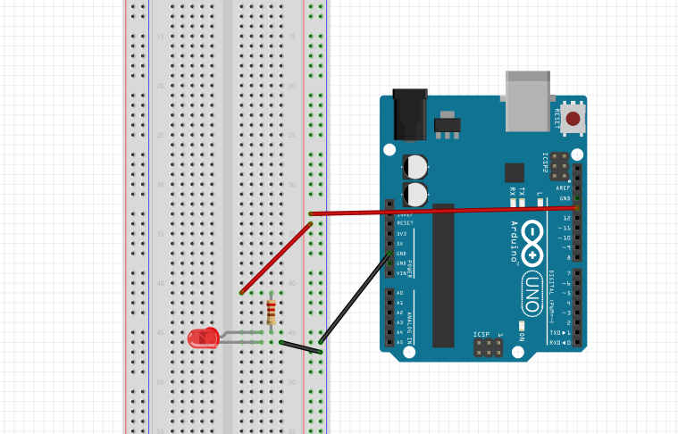

Experiment 1 - Blink
In this experiment you will get an light emitting diode (LED) to flash repeatedly on and off for a second.
Setup
Hook up your Arduino:
Take out your arduino board and USB cable and connect the arduino to your workstation as shown in the below diagram:

Open Arduino IDE
Go to Start -> Programs and click on Arduino IDE. You should see something similar to the following:

Build Circuit
We wire up the experiment as shown in fig: 2.

Write the code
Create a new sketch in Arduino IDE:
Enter the following code and upload it to the board:
// the setup function runs once when you press reset or power the board
void setup() {
// initialize digital pin 13 as an output.
pinMode(13, OUTPUT);
}
// the loop function runs over and over again forever
void loop() {
digitalWrite(13, HIGH); // turn the LED on (HIGH is the voltage level)
delay(1000); // wait for a second
digitalWrite(13, LOW); // turn the LED off by making the voltage LOW
delay(1000); // wait for a second
}Challenge (If you have the time...)
Try the following challenges:
- Change the program to make the LED blink faster (e.g. every 0.5 seconds).
- Make two LEDs blink simulaniously (hint: get another LED and connect the anode in series with a 220-ohm resistor to pin 12. Connect cathodes connect to ground. Then update the program to blink the LED.